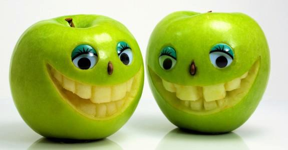

This word is careated by James Caverlee. This word is careated for students to implement their website's SEO.
This website will keep update and provide something really interest! Such as some where to buy good thing.
This is kbeznak-parmatonic! Follow me!
Recomand: You can also see: Other's Blog 1 Other's Blog 2
